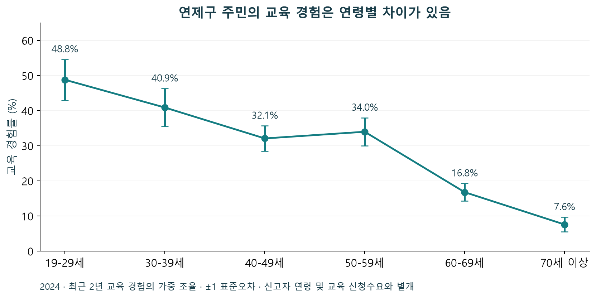
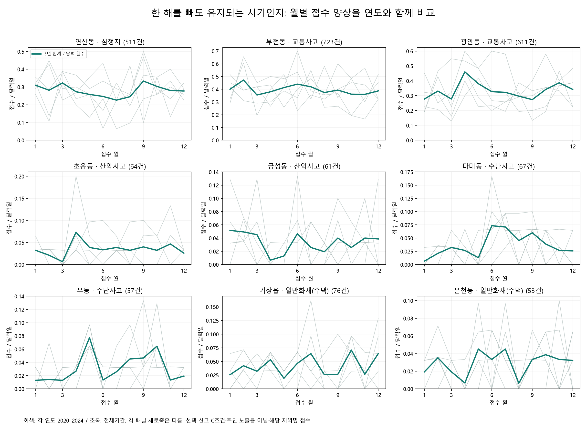

부산 CPR 기록의 하락
2021년 20.8%에서 2024년 13.8%. 주민 교육·실습 경험과 이용 가능한 과정을 함께 살폈습니다.
부산 동별 119 신고 특성에 따른 맞춤형 예방안 제안
2020–2024 신고 분석에 주민 교육 경험과
기존 대응을 더해, 보완할 범위를 구체화했습니다.
지역의 신고 건수만으로는 예방안을 고를 수 없습니다. 반복되는 신고 → 주민·현장 배경 → 이미 제공 중인 대응 → 지금 보완할 정보와 검증을 연결했습니다.
2021년 20.8%에서 2024년 13.8%. 주민 교육·실습 경험과 이용 가능한 과정을 함께 살폈습니다.
선택 조건에 안정적인 325개 조합 중, 한 해씩 빼도 최고계절이 모두 같은 조합은 121개였습니다.
부전의 구체적 설계와 못골의 평가 수행을 확인했습니다. 과거 조사만으로 새 시설을 제안하지 않습니다.
공공 안전지도·교육·점검·정비는 이미 운영되고 있습니다. 이번 결과의 차별점은 이 자료들을 지역별 신고의 신뢰도와 대응 시점까지 함께 비교하도록 연결한 것입니다. 정부에 해당 기능이 전혀 없다는 주장은 아닙니다. 기존 생활안전지도

| 연도 | 부산 시행률 | 부산 CPR을 받은 환자 | 전국 시행률 |
|---|---|---|---|
| 2020 | 19.7% | 365명 | 26.4% |
| 2021 | 20.8% | 446명 | 28.8% |
| 2022 | 20.0% | 441명 | 29.3% |
| 2023 | 16.4% | 346명 | 31.3% |
| 2024 | 13.8% | 294명 | 30.3% |
2024년 부산은 전국보다 16.5%p 낮습니다. 이는 기록된 초기대응 현황의 차이입니다. 교육 부족이 원인이라고 입증하거나 연산동의 시행률로 적용하지 않습니다.
병원이송 급성심장정지 환자 중 의무기록조사 자료이며, 근무 중 구급대원·의료인 발견/목격 사례는 제외됩니다. 발생장소 기준이고 일부 주소 결측은 출동센터 주소로 대체됩니다. 의무기록 누락으로 실제 시행보다 낮게 집계될 수 있습니다. 정확한 분모 인원은 원표에 없어 역산하지 않았습니다.

| 구 | 표본 n | 교육 경험 | 마네킹 실습 | AED 실습 |
|---|---|---|---|---|
| 연제구 | 908 | 29.0% (SE 1.9) | 27.1% (SE 1.9) | 18.5% (SE 1.7) |
| 부산진구 | 903 | 26.7% (SE 2.2) | 24.0% (SE 2.2) | 17.2% (SE 1.8) |
| 수영구 | 913 | 24.3% (SE 1.9) | 22.7% (SE 1.8) | 15.6% (SE 1.6) |
세 구 모두 AED 실습 경험의 점추정치가 교육 경험보다 낮습니다. 교육 안내에 실습 내용과 준비 도구를 구분해 보여줄 이유가 됩니다. 이 차이 자체를 교육 품질 부족이나 미충족 수요로 판정하지 않습니다.
2024년 19세 이상 주민의 최근 2년 경험, 가중 조율. 괄호는 표준오차(SE, %p)이며 신뢰구간이 아닙니다. 구 간 순위·유의한 격차를 주장하지 않습니다. 표본 인원에 비율을 곱해 경험자 수를 추정하지 않습니다.

연제구 19–29세 교육 경험은 48.8%(SE 5.8), 70세 이상은 7.6%(SE 2.1)였습니다. 주민 안내는 전 연령을 유지하며 교육 이력·실습 목적에 맞춰 제공하고, 실제 이용 장벽은 별도 참여 자료로 확인합니다.
연산동으로 접수된 심정지 관련 신고
2020–2024 · 정상 처리·운영성 제외
같은 이동전화 비교집합 710건 중 511건이 남았고, 반복·증감 방향은 세 처리조건에서 유지됐습니다. 다만 최고계절은 한 해 제외 비교 5회 중 4회만 같았습니다. 특정 계절에만 한정하지 않는 안내가 현재 근거에 맞습니다.
주민 배경은 연산1–9동 중 존재하는 8개 행정동 후보별로 제공합니다. 예를 들어 연산3동의 65세 이상 인원은 2020년 2,160명에서 2024년 2,744명으로 늘었지만, 비중은 29.11%에서 26.77%로 낮아졌습니다. 구성비만으로 주민 규모 변화를 판단하지 않도록 인원·비중을 함께 표시합니다.
| 기존 서비스 | 대상 | 시간·기간 | 수료증 | 이용 조건 |
|---|---|---|---|---|
| 응급처치 기본교육 | 12세 이상 개인(10명 이상) 또는 단체로 안내 | 50–80분 | 평가·수료증 발급 없음 | 담당 소방서와 교육 일정 협의 공식 이용 안내 |
| 응급처치 수료증 과정 | 수료증 발급 희망 대상자 | 240분 | 실습평가 80점 이상 시 발급 가능 | 담당자와 사전 연락·일정 협의 공식 이용 안내 |
| 동래소방서 CPR 실습 기자재 대여 | 가족·비영리단체·동호회 등 일반인; 영리 목적 제외 | 7일 | 대여만으로 수료증 발급 보장 안 함 | 유선 문의 → 온라인 신청 → 신분증 지참 방문수령 → 반납 공식 이용 안내 |
기본 교육, 수료증 과정, 교육용 기자재 대여를 목적·시간·대상별로 연결했습니다. 교육용 AED는 환자에게 사용하는 AED와 구분했습니다. 공식 기관의 실제 재고·예약 가능을 보장하지 않습니다.
부산 CPR 시행률, 연제구 주민 표본, 연산동 신고, 행정동 후보별 주민 통계는 서로 다른 자료입니다. 개인 단위로 결합하거나 교육 경험이 낮은 연령의 신고로 바꾸지 않았습니다.
194개 지역명×5유형의 970개 조합에 대해 전체 5년·각 연도·한 해 제외 5회, 총 11개 기간을 재계산했습니다. 월·계절의 길이가 달라 해당 기간 달력일수당 접수로 최고 시기를 비교했습니다.

| 지역·유형 | 5년 접수 | 최고월 | 최고계절 | 월 유지 | 계절 유지 | 이번 판단 |
|---|---|---|---|---|---|---|
| 연산동 · 심정지 | 511건 | 9월 | 가을 | 3/5 | 4/5 | 연중 교육·실습 안내를 유지. 특정 계절 전용 사업 근거는 아님. |
| 부전동 · 교통사고 | 723건 | 2월 | 겨울 | 3/5 | 4/5 | 겨울 전용 대책으로 제한하지 않음. 정비 전후의 같은 구간 비교가 우선. |
| 광안동 · 교통사고 | 611건 | 4월 | 봄 | 5/5 | 4/5 | 봄 단독 집중보다 연중 비교. 처리조건에 민감한 사례라는 기존 판단 유지. |
| 초읍동 · 산악사고 | 64건 | 4월 | 가을 | 5/5 | 2/5 | 최고계절이 자주 바뀜. 계절별 인력 배치 근거로 사용하지 않음. |
| 금성동 · 산악사고 | 61건 | 1월 | 겨울 | 2/5 | 4/5 | 겨울 결과를 단독 처방으로 확대하지 않음. 기존 정비·통제 기간 구분. |
| 다대동 · 수난사고 | 67건 | 6월 | 여름 | 3/5 | 5/5 | 여름 안내와 기존 운영기간을 대조할 근거. 해수욕장 내 사건 또는 인력 부족 입증은 아님. |
| 우동 · 수난사고 | 57건 | 5월 | 가을 | 5/5 | 4/5 | 최고월과 최고계절이 다름. 수난 유형·현장별 원인 및 위치는 미확정. |
| 기장읍 · 일반화재(주택) | 76건 | 10월 | 여름 | 1/5 | 3/5 | 최고월 5회 중 1회 유지. 특정 월 화재 예방에만 집중하지 않음. |
| 온천동 · 일반화재(주택) | 53건 | 5월·7월 | 가을 | 0/5 | 4/5 | 동률 포함 최고월은 유지 안 됨. 연중 주택 예방 안내 유지. |
기존 선택 영향 검증에서 반복·증감 방향이 유지된 325개 조합 중 최고월은 33개, 최고계절은 121개가 다섯 제외 비교 모두에서 같았습니다. 연도당 최소 20건인 86개로 좁혀도 최고계절 유지 조합은 35개였습니다.
이 분석은 정상 처리·운영성 제외 자료에서 실시했습니다. 월·계절 자체의 결측 제외 전후 안정성을 검사한 것은 아닙니다. 작은 차이·동률도 최고 시기를 바꿀 수 있으므로 변동을 위험 또는 효과의 증거로 사용하지 않습니다. 겨울은 같은 연도의 1·2·12월이며 연속된 한 겨울이 아닙니다.
970개 안정성 집계 · 선택 조건에 안정적인 조합의 층별 결과

| 대상 | 이번에 확인한 대응 | 현재 결론 |
|---|---|---|
| 부전역 맞이길 | 중앙대로783번길 일원 설계: 투수블록 3,222㎡, 점형 유도 88㎡·선형 138㎡. 버스표지판 4개소, 카트보관소 1·쉼터 결합형 1, 유도사인 2개소. 2026.2.5 제막식 기록. | 보행 접근환경 보완이 포함된 기존 사업. 설계수량은 준공 검수수량과 다름. 2024 BDI 조사선 9개와 정확한 일치는 미확정. |
| 광안역 일원 | BDI 지도에 조사선이 있으나 팝업 거리합 1,102.5m와 표의 조사거리 1,034.4m는 68.1m 차이. 2025 수영로 포장 검사·지급 기록 확인. | 지도 경로를 실제 조사구간 원자료로 쓰지 않음. 수영로 포장과 내부도로 보차분리 개선을 구분. |
| 못골시장 | 2025 완료 발표에 더해 2026 효과평가 용역 계약·준공 기록 확인. | 기존 기관도 평가를 수행함. 평가보고서 수치가 없어 사고·보행 개선효과는 미기재. |
| 거제천로101~121 | 2024.12 상임위에서 해당 구간 펜스 예산 3,740만원 삭감 논의 확인. | 최종 예산·집행·현재 설치는 미확정. 현장 미조치 또는 신규 설치 필요로 확정하지 않음. |
“과거 조사에서 문제가 있었으니 지금 같은 시설을 더 설치”하는 연결을 제거했습니다. 기존 사업의 설계·완료·평가 단계를 표시하고, 개별 조사구간이 실제로 개선됐는지는 최종 도면·현장 상태와 분리했습니다.
BDI 조사는 실제 고령 환자 추적이나 119 신고 지점 분석이 아닙니다. 지도 팝업의 거리·도보 예상시간을 실측값으로 복제하지 않았습니다.
| 사례 | 관측·기존 대응을 함께 읽은 결과 | 보완 범위 |
|---|---|---|
| 다대동 수난 67건 | 여름 최고는 한 해 제외 5회 모두 유지. 기존 해수욕장 여름 운영과 비개장 관리 자료를 함께 확인. | 기존 운영기간과 안전 안내를 연결. 신고가 해수욕장 안에서 발생했거나 운영 인력이 부족하다고 판정하지 않음. |
| 우동 수난 57건 | 최고월은 5월, 최고계절은 가을. 월 한 개와 계절 합계의 결과는 다름. | 해변·하천·항만 등 실제 발생장소가 구분되지 않아 특정 시설 보완안은 확정하지 않음. |
| 초읍동 산악 64건·금성동 61건 | 초읍의 2025 매트·울타리, 금정산 로프·안내 정비를 반영. 최고계절은 각각 2/5·4/5 유지. | 이미 시행한 정비를 신규 공백으로 제안하지 않음. 기존 코스별 안전 안내와 유효한 통제 기간을 구분. |
| 기장읍 주택화재 76건·온천동 53건 | 주택 구조·기존 예방교육 자료를 연결. 최고월은 1/5·0/5 유지. | 연중 주택 예방 안내를 유지. 건축물·세대별 피해 또는 신규 소방시설 수량은 추정하지 않음. |
해당 수치는 2020–2024 정상 처리·운영성 제외 접수입니다. 기존의 상권·생활인구·주택·시설 자료는 각 질문에 필요한 사례에서만 사용했습니다. 벌집제거는 심층 검토와 보완안에서 제외했습니다.
기존 전체 심층 결과·출처| 구분 | 확인 근거 | 이번 처리 |
|---|---|---|
| 초기대응 현황 차이 | 부산의 기록된 CPR 시행률 하락, 구 단위 주민 교육·실습 경험 | 부산 배경→연산 신고→연제 교육 경험→기존 과정으로 연결. 원인·개별 수요는 미확정. |
| 공개 정보의 조건 충돌 | 사하 공고 운영 종료 7.31·신청 종료12.31 및 10명 개설 조건 상충, 2026.9.16 재확인 | 시제품에서 현재 예약 가능으로 안내하지 않고 사전협의 경로를 제공. 기관 원공고 수정이나 교육 중단의 증거가 아님. |
| 기록을 오해한 분석 오류 | 13행은 조치 전용란이 아닌 일반 비고 공란 | 미조치 시설13곳·조치 누락률이라는 해석 삭제. 실제 명령·이행 기록과 구분. |
| 과거 조사와 현재 사업의 연결 부족 | 부전 설계 내역, 광안 거리 불일치, 못골 평가 수행 | 기존 대응의 구체 내용을 추가. 조사선과 최종 시공선의 정확한 일치는 미확정. |
| 맞춤 안내에 필요한 정보 결합 | 지역·시기·주민 배경·공식 서비스의 기간과 조건이 다른 자료에 존재 | 한 화면에서 비교하도록 결과 연결. 실제 사용자의 탐색 부담 감소는 아직 측정 안 됨. |
자료를 확보하지 못한 상태와 실제 서비스 부재를 구분했습니다. 외부 기관에 공문·문의·예약을 보내지 않았으며 공개 자료의 확인 범위까지 반영했습니다.
| 단계 | 보완 내용 또는 기대 경로 | 측정값 | 현재 상태 |
|---|---|---|---|
| 현재 결과물 | 지역별 반복·시간 민감도, 주민 구성, 이용조건, 기존 사업을 함께 제공 | 공식 원문 일치·필터별 수치·링크·파일 실행 검증 | 검증 기록에 실행 결과 기재 |
| 직접 기대효과 | 목적에 맞는 교육·실습 경로 선택, 지난 사업과 현재 상태의 혼동 감소 | 같은 과제의 정답률·중앙 소요시간·오선택률 | 사용자 실험 미실시. 향상률 제시 안 함 |
| 운영 후 효과 | 실제 참여·수료와 술기 유지, 실제 접근·정비 개선 | 신청/완료/탈락 인원, 술기 평가, 동일 구간 전후 현장값 | 기관·참여자 동의 및 비교 설계 필요 |
| 장기 효과 | 실제 CPR 수행·환자 예후·사고 피해 변화 | 구급·의무기록, 발생 조건 및 기록 완전성, 비교지역 | 본 웹의 인과효과 미입증 |
가장 직접적인 기대효과는 이용 목적에 맞는 경로 선택과 현재 상태의 정확한 이해입니다. 이를 먼저 측정하고, 참여·술기·피해 감소는 후속 효과로 검증해야 합니다.
비교 실험은 동일 과제에서 기존 공공페이지와 시제품의 제시 순서를 균형 있게 배치하고, 정답·실패·중도탈락·시간을 모두 기록하도록 명세했습니다. 향상률이나 필요한 실험 표본 수를 결과에 맞춰 정하지 않았습니다.
신고 704,689건의 기존 선택 기준을 유지했습니다. 전체 처리 A 704,689건, 정상 처리 B 579,412건, 정상 처리·운영성 제외 C 574,662건입니다. 새 시간 분석의 5유형 C 합계는 41,720건입니다.
공식 통계집의 10개 CPR 값, 지역사회건강조사 99개 집계값, 시간 교차집계, 사업 설계와 기존 대응을 각각 검증했습니다. 통계표·원문·코드의 해시를 보존했고, 공개 화면에는 접수번호·개별 신고 좌표·원시설 명부를 추가하지 않았습니다.
독립 검증과 실행 기록 · 입력 해시 · 공식 출처 목록
2026.9.16 확보 자료 기준입니다. 현재 신고를 수신하는 실시간 서비스가 아닙니다. 과거 5년 신고와 2024 조사·2025–2026 대응을 각각의 기준일로 제공합니다.